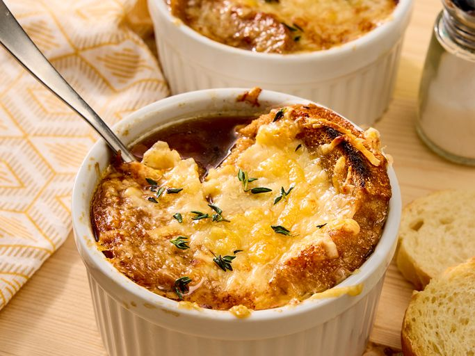
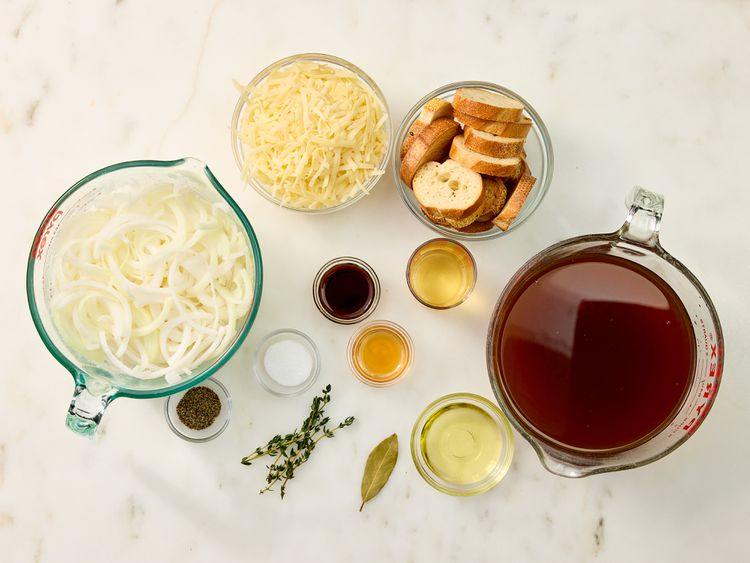
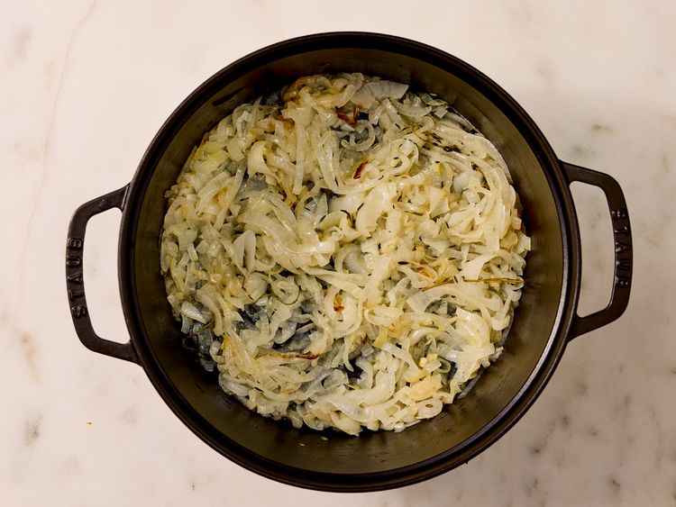
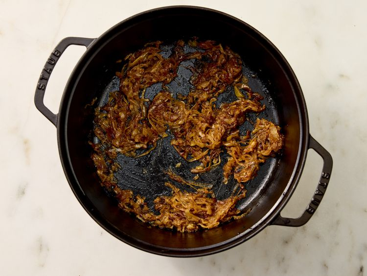
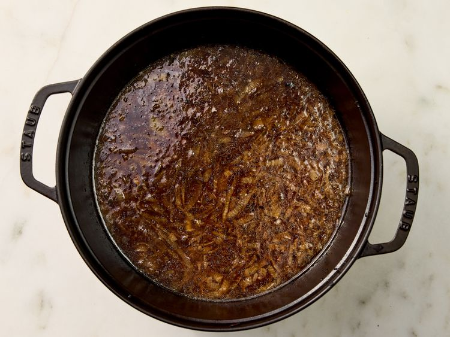
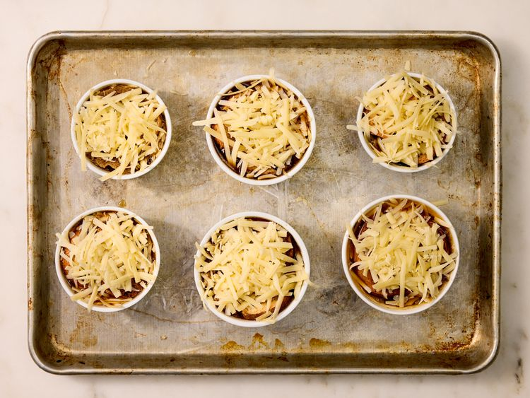
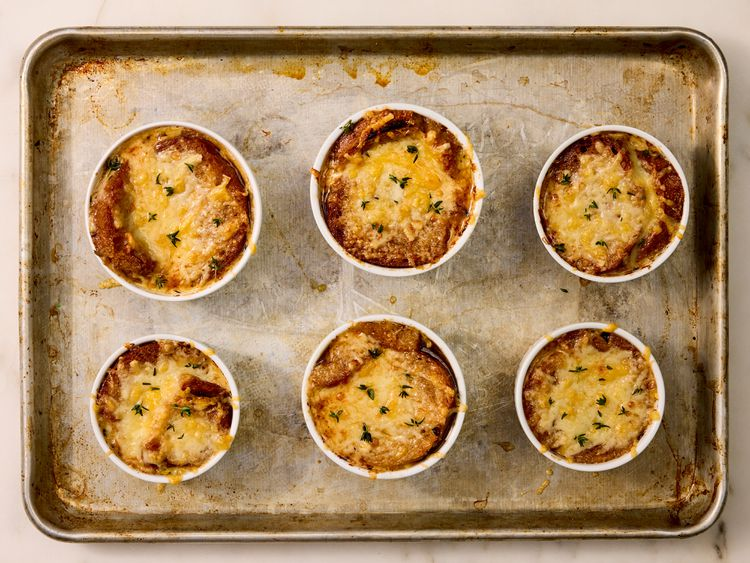

Back to Homepage
Lazy French Onion Soup

Description
For this lazy French onion soup, onions caramelize in the oven, with only intermittent stirring. Toasted baguette and bubbly broiled Gruyère cheese finish the soup.
Ingredients
- 3 yellow onions, thinly sliced
- 2 tablespoons olive oil
- 3 thyme sprigs, plus leaves for garnish
- 1/4 cup dry sherry
- 6 cups beef broth
- 1 tablespoon Worcestershire sauce
- 1/2 teaspoon freshly ground black pepper
- 1/2 teaspoon kosher salt
- 1 fresh or dried bay leaf
- 2 teaspoon apple cider vinegar
- 12 slices French bread loaf or other soft baguette, lightly toasted
- 8 ounces Gruyere cheese, shredded
Steps
- Gather all ingredients. Preheat the oven to 425 degrees F (220 degrees C) with rack in the middle position

- Combine onions, oil, and thyme sprigs in a heavy-bottomed pot or large Dutch oven.

- Bake, covered, in the preheated oven, stirring once halfway through, until onions are wilted and lightly browned, about 40 minutes. Uncover and continue cooking, stirring occasionally, until onions are golden brown and caramelized.
- Remove from oven and stir in sherry. Cook over medium, stirring constantly, scraping up any browned bits from the bottom and sides of pot, until liquid has mostly evaporated.

- Stir in broth, Worcestershire, pepper, salt, and bay leaf; bring to a boil over high. Reduce heat to medium-low, and simmer, undisturbed, allowing flavors to meld together, about 15 minutes. Remove from heat and stir in cider vinegar. Discard thyme sprigs and bay leaf.

- Increase oven temperature to broil. Ladle soup evenly into 6 broiler-proof bowls or crocks, and place the bowls on a large rimmed baking sheet. Top each bowl with 2 bread slices and about 1/3 cup Gruyere.

- Broil until Gruyere is bubbly and the bread is browned in places. Garnish with thyme leaves and serve immediately.
